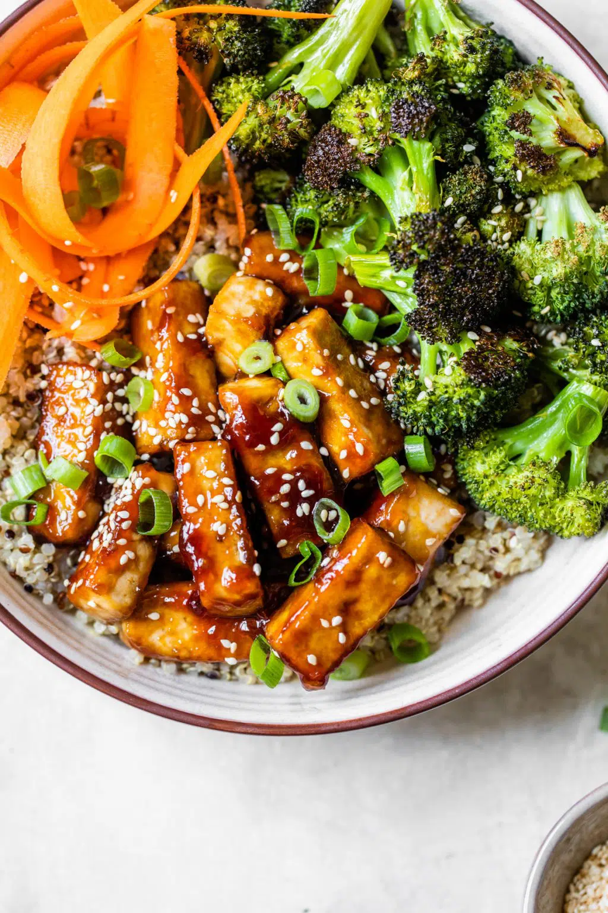

Vegan Lunch Recipes
Vegan BBQ Sandwich

Ingredients:
- 1 block of extra firm tofu or tempeh, sliced
- 1 cup BBQ sauce (store-bought or homemade)
- 4 sandwich buns
- 1 cup coleslaw (optional)
- 1 tablespoon olive oil
- Salt and pepper to taste
Procedure:
- Press tofu to remove excess moisture.
- Slice tofu or tempeh into thin strips.
- Heat olive oil in a pan over medium heat.
- Cook tofu or tempeh strips until golden brown on both sides.
- Add BBQ sauce to the pan and stir to coat the strips evenly.
- Toast sandwich buns.
- Assemble the sandwich with tofu or tempeh strips and coleslaw.
- Serve hot.
Vegan Biryani

Ingredients:
- 1 cup basmati rice
- 1 cup mixed vegetables (carrots, peas, potatoes, beans)
- 1 onion, sliced
- 2 tomatoes, chopped
- 1/2 cup coconut milk
- 2 tablespoons biryani masala
- 1 teaspoon turmeric
- 1 teaspoon cumin seeds
- 2 tablespoons oil
- Salt to taste
- Fresh coriander for garnish
Procedure:
- Rinse and soak basmati rice for 30 minutes.
- Heat oil in a pot and add cumin seeds.
- Add sliced onions and sauté until golden brown.
- Add chopped tomatoes and cook until soft.
- Add biryani masala, turmeric, and salt. Stir well.
- Add mixed vegetables and cook for 5 minutes.
- Add soaked rice and coconut milk. Mix well.
- Add water (as per rice instructions) and bring to a boil.
- Cover and simmer on low heat until rice is cooked.
- Garnish with fresh coriander before serving.
Vegan Japanese-Style Rice Salad

Ingredients:
- 2 cups cooked sushi rice
- 1 cup edamame (shelled)
- 1 cup cucumber, diced
- 1 cup carrot, julienned
- 1 avocado, diced
- 2 tablespoons rice vinegar
- 1 tablespoon soy sauce (or tamari for gluten-free)
- 1 tablespoon sesame oil
- 1 tablespoon toasted sesame seeds
- 2 green onions, sliced
- 1 sheet nori, cut into thin strips
- Salt to taste
Procedure:
- Cook sushi rice according to package instructions and let it cool.
- In a large bowl, combine the cooked rice, edamame, cucumber, carrot, and avocado.
- In a small bowl, whisk together rice vinegar, soy sauce, and sesame oil.
- Pour the dressing over the rice and vegetable mixture and toss to combine.
- Sprinkle with toasted sesame seeds, green onions, and nori strips.
- Season with salt to taste.
- Serve immediately or chill in the refrigerator for 30 minutes for a colder salad.
Vegan Chili

Ingredients:
- 1 can black beans, drained and rinsed
- 1 can kidney beans, drained and rinsed
- 1 can corn
- 1 can diced tomatoes
- 1 onion, chopped
- 2 garlic cloves, minced
- 1 bell pepper, chopped
- 1 cup vegetable broth
- 2 tablespoons chili powder
- 1 teaspoon cumin
- 1 teaspoon paprika
- Salt and pepper to taste
- 2 tablespoons olive oil
Procedure:
- Heat olive oil in a large pot over medium heat.
- Add chopped onion and minced garlic. Sauté until translucent.
- Add bell pepper and cook for another 5 minutes.
- Stir in chili powder, cumin, paprika, salt, and pepper.
- Add beans, corn, diced tomatoes, and vegetable broth.
- Bring to a boil, then reduce heat and simmer for 20-30 minutes.
- Serve hot with toppings like avocado, cilantro, or vegan sour cream.
Sesame Tofu Bowl

Ingredients:
- 1 block of extra firm tofu, pressed and cubed
- 2 tablespoons soy sauce (or tamari for gluten-free)
- 1 tablespoon sesame oil
- 1 tablespoon rice vinegar
- 1 tablespoon maple syrup
- 1 tablespoon sesame seeds
- 2 cups cooked brown rice
- 1 cup steamed broccoli florets
- 1 cup shredded carrots
- 1 avocado, sliced
- 2 green onions, sliced
- 1 tablespoon olive oil
- Salt and pepper to taste
Procedure:
- In a bowl, mix soy sauce, sesame oil, rice vinegar, and maple syrup to create the marinade.
- Add the cubed tofu to the marinade and let it sit for at least 15 minutes.
- Heat olive oil in a pan over medium heat.
- Add the marinated tofu to the pan and cook until golden brown on all sides.
- Sprinkle sesame seeds over the tofu and cook for an additional 2 minutes.
- In serving bowls, divide the cooked brown rice.
- Top the rice with cooked tofu, steamed broccoli, shredded carrots, and avocado slices.
- Garnish with sliced green onions.
- Season with salt and pepper to taste.
- Serve immediately.
Vegan Noodle Bowl

Ingredients:
- 8 oz rice noodles
- 1 cup broccoli florets
- 1 carrot, julienned
- 1 bell pepper, sliced
- 1/2 cup edamame
- 1/4 cup soy sauce
- 2 tablespoons peanut butter
- 1 tablespoon maple syrup
- 1 tablespoon lime juice
- 1 teaspoon grated ginger
- 1 garlic clove, minced
- 2 tablespoons sesame oil
Procedure:
- Cook rice noodles according to package instructions. Drain and set aside.
- Steam broccoli, carrot, bell pepper, and edamame until tender.
- In a small bowl, whisk together soy sauce, peanut butter, maple syrup, lime juice, ginger, and garlic.
- Heat sesame oil in a large pan over medium heat.
- Add cooked vegetables and noodles to the pan.
- Pour sauce over the noodles and vegetables, tossing to coat evenly.
- Serve warm, garnished with sesame seeds or chopped peanuts.
Non-Vegan Lunch Recipes
Chicken Curry

Ingredients:
- 1 lb chicken breast, cubed
- 1 onion, chopped
- 2 garlic cloves, minced
- 1 tablespoon ginger, minced
- 1 can coconut milk
- 1 can diced tomatoes
- 2 tablespoons curry powder
- 1 teaspoon turmeric
- 1 teaspoon cumin
- 1 teaspoon paprika
- 2 tablespoons olive oil
- Salt and pepper to taste
- Fresh cilantro for garnish
Procedure:
- Heat olive oil in a large pot over medium heat.
- Add chopped onion, minced garlic, and minced ginger. Sauté until translucent.
- Add chicken breast and cook until browned.
- Stir in curry powder, turmeric, cumin, paprika, salt, and pepper.
- Add coconut milk and diced tomatoes. Bring to a boil.
- Reduce heat and simmer for 20-25 minutes until chicken is cooked through.
- Garnish with fresh cilantro before serving.
Sardines on Pepper Roast

Ingredients:
- 1 can of sardines in olive oil
- 2 large bell peppers (red, yellow, or orange), halved and seeds removed
- 1/4 cup olive oil
- 2 cloves garlic, minced
- 1 teaspoon dried oregano
- Salt and pepper to taste
- 1 tablespoon lemon juice
- 2 tablespoons chopped fresh parsley
- 1/4 cup crumbled feta cheese (optional)
Procedure:
- Preheat oven to 400°F (200°C).
- Place the halved bell peppers on a baking sheet, cut side up.
- In a small bowl, mix together olive oil, minced garlic, dried oregano, salt, and pepper.
- Brush the bell peppers with the olive oil mixture.
- Roast the bell peppers in the preheated oven for 20-25 minutes, or until they are tender and slightly charred.
- Remove the bell peppers from the oven and let them cool slightly.
- Drain the sardines and arrange them on top of the roasted bell peppers.
- Drizzle with lemon juice and sprinkle with chopped fresh parsley.
- Top with crumbled feta cheese if desired.
- Serve warm or at room temperature.
Open-Face Hot Ham and Cheese with Chipotle Mayo
Ingredients:
- 4 slices of artisan bread
- 8 slices of deli ham
- 4 slices of cheddar cheese
- 1/2 cup mayonnaise
- 1 chipotle pepper in adobo sauce, minced
- 1 tablespoon adobo sauce
- 1 tablespoon olive oil
- Salt and pepper to taste
- 1 cup arugula (optional, for serving)
Procedure:
- Preheat oven to 375°F (190°C).
- In a small bowl, mix together mayonnaise, minced chipotle pepper, and adobo sauce.
- Spread the chipotle mayo evenly on each slice of bread.
- Layer each slice of bread with 2 slices of ham and 1 slice of cheddar cheese.
- Place the open-face sandwiches on a baking sheet.
- Drizzle olive oil over the top of each sandwich and season with salt and pepper.
- Bake in the preheated oven for 10-15 minutes, or until the cheese is melted and bubbly.
- Remove from oven and let cool slightly.
- Top with fresh arugula if desired.
- Serve warm.
Beef Tacos

Ingredients:
- 1 lb ground beef
- 8 small tortillas
- 1 onion, chopped
- 2 garlic cloves, minced
- 1 tablespoon taco seasoning
- 1 cup shredded lettuce
- 1 cup diced tomatoes
- 1/2 cup shredded cheese
- 1/4 cup sour cream
- 2 tablespoons olive oil
- Salt and pepper to taste
Procedure:
- Heat olive oil in a pan over medium heat.
- Add chopped onion and minced garlic. Sauté until translucent.
- Add ground beef and cook until browned. Drain excess fat.
- Add taco seasoning, salt, and pepper. Stir well.
- Warm tortillas in a dry pan or microwave.
- Assemble tacos by placing ground beef, shredded lettuce, diced tomatoes, shredded cheese, and sour cream on each tortilla.
- Serve warm.
Shrimp Scampi

Ingredients:
- 1 lb shrimp, peeled and deveined
- 4 garlic cloves, minced
- 1/2 cup white wine
- 1/4 cup lemon juice
- 1/4 cup chopped parsley
- 1/4 cup grated Parmesan cheese
- 4 tablespoons butter
- 2 tablespoons olive oil
- Salt and pepper to taste
- Cooked pasta for serving
Procedure:
- Heat olive oil and butter in a large pan over medium heat.
- Add minced garlic and sauté until fragrant.
- Add shrimp and cook until pink and opaque.
- Add white wine, lemon juice, salt, and pepper. Cook for 2-3 minutes.
- Stir in chopped parsley and grated Parmesan cheese.
- Serve hot over cooked pasta.
Chicken Parmesan

Ingredients:
- 4 chicken breasts, pounded thin
- 1 cup breadcrumbs
- 1/2 cup grated Parmesan cheese
- 1 cup marinara sauce
- 1 cup mozzarella cheese, shredded
- 2 eggs, beaten
- 1 cup flour
- 2 tablespoons olive oil
- Salt and pepper to taste
Procedure:
- Preheat oven to 375°F (190°C).
- Set up a breading station with flour, beaten eggs, and a mixture of breadcrumbs and grated Parmesan cheese.
- Dredge each chicken breast in flour, then dip in beaten eggs, and coat with the breadcrumb mixture.
- Heat olive oil in a large pan over medium heat.
- Cook chicken breasts until golden brown on both sides.
- Transfer to a baking dish, top with marinara sauce and shredded mozzarella cheese.
- Bake for 20-25 minutes until cheese is melted and bubbly.
- Serve hot, garnished with fresh basil.